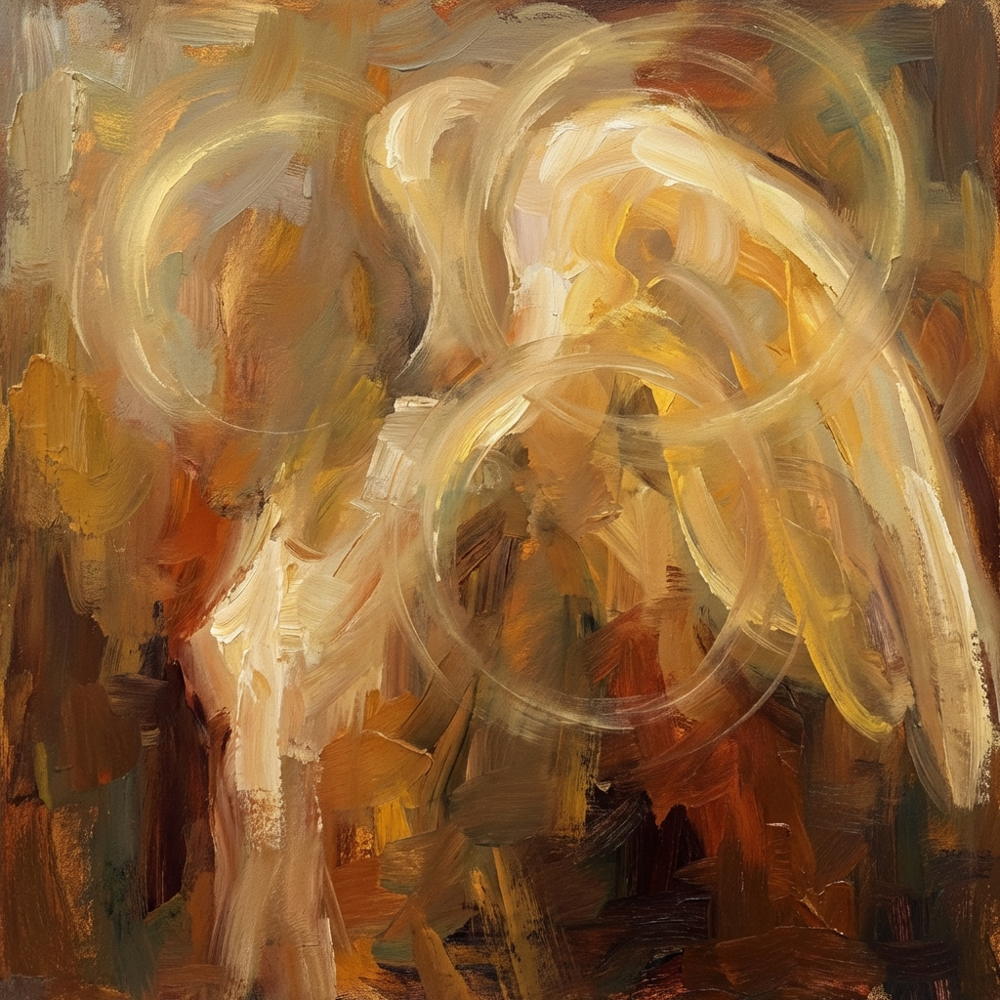

Veri eroi

Angeli sono vissuti sulla Terra
nelle lunghezze dei tempi
senza sapere di avere le ali.
nelle lunghezze dei tempi
senza sapere di avere le ali.
Sentimenti oltre il valore estimabile
hanno camminato lungo le vie buie
hanno camminato lungo le vie buie
fieri di andare a lavorare
per provvedere ai figli
senza ombra o indugio
senza batter ciglio
per provvedere ai figli
senza ombra o indugio
senza batter ciglio
come la cosa più naturale al mondo
accettando il male così
come si accetta un giorno di pioggia
accettando il male così
come si accetta un giorno di pioggia
non con rassegnazione
ma con la quiete
che rende veri eroi.
ma con la quiete
che rende veri eroi.
Paola Spremulli